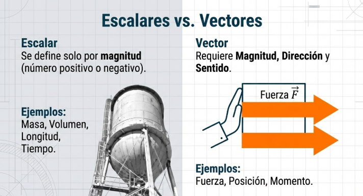
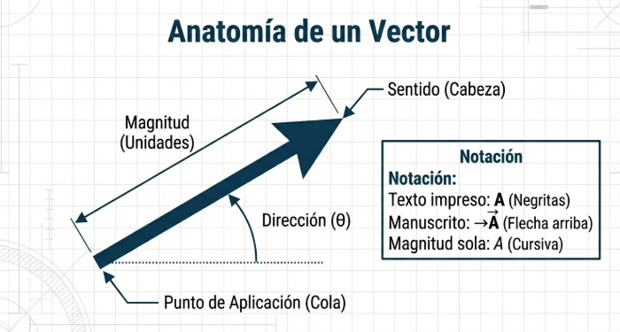
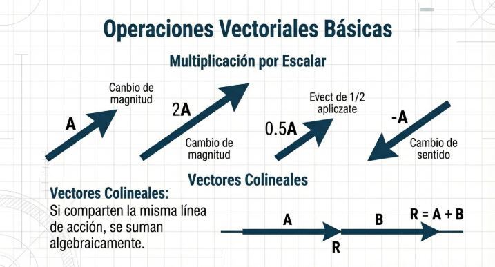

1.2.1 Conceptos de Fuerza
La fuerza es una magnitud vectorial que mide la interacción entre cuerpos. Se caracteriza por su punto de aplicación, magnitud, dirección y sentido. La unidad en el SI es el newton (N).


